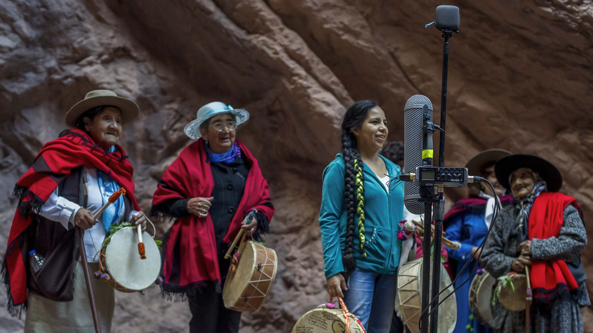
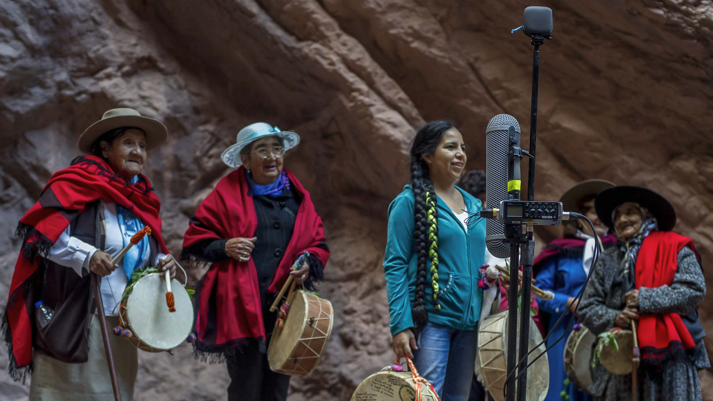
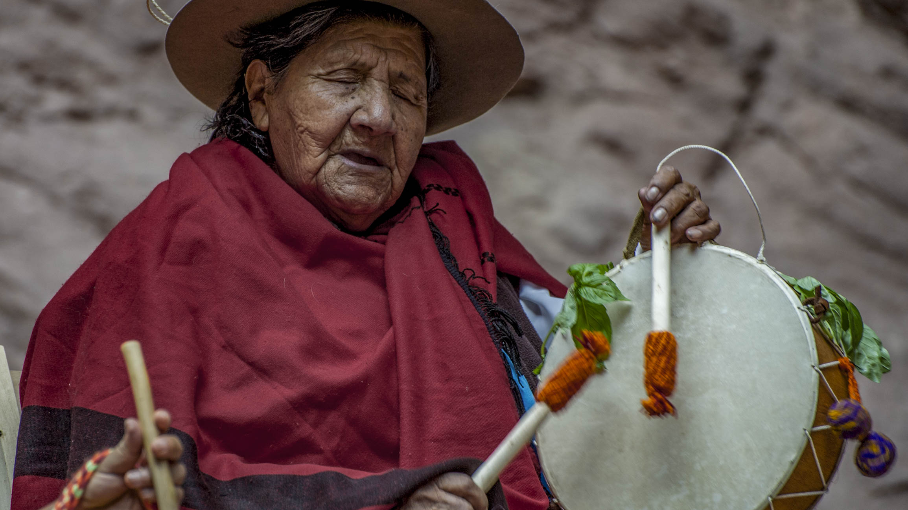
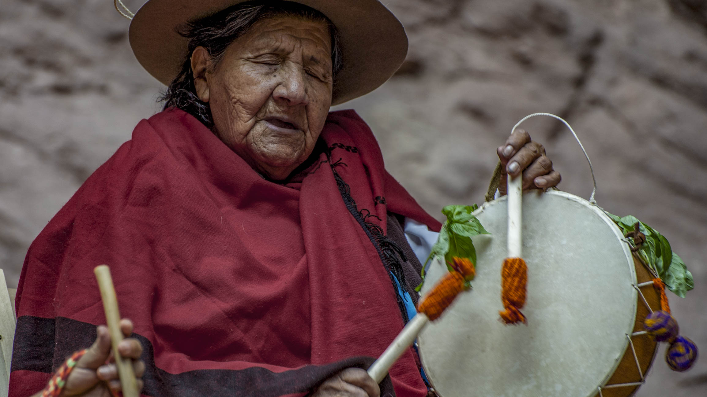

Proyecto GRAPa
Grupo de Relevamiento Acústico del Patrimonio
*Proyecto GRAPa is developed by interrelated works concern to survey, register and promotion of the Argentinian acoustic heritage.
-
3D audio acoustic surveys
-
Musical recordings in Virtual Reality of rituals patrimonial
-
Promotion of musical creation of site-specific
-
A series of audiovisual micro-documentaries about the done work

Sound in the Space
In western culture, musical creation and perform is lead by parameters in which, both performers and listeners remain statics in their places. The most common example is the traditional theatre where the audience stay in their armchairs while the performers are playing from the front scenario.
To understand the pre-colonial standard practices is indispensable to live them as they were conceived, which usually are immersive, not unidirectional as in the western culture, and space has a meaningful role in the sound perception beyond visual boundaries.
Aiming to achieve an authentic and complete experience, both visually and sonically, for the audience, we register traditional music and rituals with a specific technology capable of recreating the original feeling of the ancestral cultures. In this manner, by using 3D recordings, the audience can understand the ancestral communities’ cosmovision expressed through their cultural practices.


The acoustic heritage


We define Acoustic Heritage as those places in which, due to their constitutive characteristics, the auditory experience and its landscape are in tight correlation.
The place’s acoustic is not everlasting; the passing time transforms and degrades materials, causing an acoustic variation. For this reason, it is necessary to study and register those places as acoustic heritage.
We record their acoustics particularities in 3D audio using ambisonics microphones and directional sources. Those recordings allow as to obtain precise acoustic studies of those places, create an aural archive, and can be used in artistic productions.
Acoustic Surveys

Our acoustic register work starts with a topographic survey, in which we plot a regular grid upon an irregular surface; this allows us to position every speaker and microphone precisely to obtain an accurate acoustic analysis by recording Ambisonics Impulse Responses (IR).
Due to the place’s irregularity topography is needed to draw a rhombus grid, at fix height, that allows us to precisely measure every source and reception’s position.
As a result, there is an Ambisonics B-Format IR’s database which can be used in audio scientific studies, audio post-production, and for educational purpose.
De este modo queda a dispocision un banco de Respuestas Impulso (IR's)
en Ambisonics (Formato B) para ser utilizadas en post producción de audio,
con fines educativo o de cualquier otro indole:
Audiovisual Documentary


An audiovisual documental series shows the experiences of the fieldwork, linking the places’ acoustics with the natives’ culture and music.
There is a strong relationship between the places’ landscape and the soundscape and the culture developed there. By analysing how the landscape sounds, interviewing native people and registering their cultural manifestations, we aim to show how the landscape and culture are interrelated.
Musical Practices in Virtual Reality
 

We use specific techniques to register the cultural manifestations, in their own land, with 3D audio and video.
By using immersive technologies, it is possible to experience the pre-colonial cultural manifestation as they were conceived; VR devices allow the audience to be placed inside the musical ritual, thus having a complete experience. For example, in a Coplas’ round, registered in VR, one can be in its middle.
In Salta province (Argentina), the well known Copla singer Mariana Carrizo finds a deep relationship between the Canto con Caja and the valleys’ landscape; where, during her childhood, she learnt to sing. Her participation in GRAPa project is essential for the appreciation and comprehension of the Canto con Caja and its relationship with the landscape.
Places and Music
We choose the site to work carefully, beyond their acoustic and soundscape particularities we keep in mind the following factors:
-
Its present and past are significant for society
-
Its cultural and tourism attraction
-
Accessibility
By extensive research, was decided to explore seven sites grouped in three Argentina's regions, relating them with its cultural expressions and music.
integran:
-
Northeast region
-
Cuyo | Patagonia Region
-
Northwest region

Northeast
 

The song of Copla
Contiguous to the Andes Mountains, this region is characterized by its valleys and gulles. Its protected areas belonged to the south of the Inka empire. In this region we study three sites: “El Anfiteatro” , in La Quebrada de las Conchas (Salta), "Parques provinciales de Ischigualasto y Talampaya" (San Juan), and "La Quebrada de Humahuaca" in La Puna (Jujuy).ç
The song of Copla is one of the most significative expressions of this region; it is practised by different communities since ancestral times and transmitted orally.
It is played in a deep linking with the natural environment, for that reason we consider it as an explicit exponent of the Acoustic and Sonic Heritage.
The Amphitheatre
Less than 40 kilometres from Cafayate city on National Route 68, few meters from the Conchas river, it is El Anfiteatro (The Amphitheatre)
With a pseudo-oval shape, El Anfiteatro is semi-closed rock formation sculpted by the erosion. Its particular contour and the material of its walls give to El Anfiteatro an exceptional acoustic quality, well known in the region and the reason why it lodges a music festival called Concierto en la Montaña (Concert in the Mountain), held annually since 1991.


Cuyo | Patagonia Region


Araucana’s music
Regions of arids steppes, both Cuyo and Patagonia are known for their dry and cold weathers. From this region we decided research cavern formations whose their acoustic’s attributes are distinghesed from the other Argentina’s spaces. In particular, we study two caverns: Caverna de las Brujas (Witches Cavern) in Malargüe (Mendoza), and Cueva de las Manos (Hands Cavern) in the Cañadón del Rio Pinturas (Santa Cruz).
Huarpe and Mapuche communities, who dwelt those regions, expressed a wide variety of songs and music linked to their believes. Both have the traditional snare drum, and the shamanic sing as an identity element. Likewise, the pre-Tehuelches tribes (Aoni-Kenk), closer to the Cañadón del Río Pinturas, in addition to its singing, developed a group of musical instruments as the Koolo, and the Rambo, and percussion instruments as the Aple, the Chelper, and the Sonajero.
Witches Cavern
It is a closed cavern, located at 8 kilometres to the norh of the National Route 40, close to Bardas Blancas in the Valle del Río Grande valley, in the south of Mendoza in the Malargüe department.
Our research is concentrated in the largest and accesible room, known by its acoustics characteristics and the passage of the pre-colonial communities, it is called Sala de la Virgen.
Its shutte access has approximately fifteen meters long ends in the Sala de la Virgen of 35 meters deep, 20 meters wide, and irregular height of 10 meters in the highest points.

Northeast region

Qom Music
Of the Northwest region, we will study two national parks: El Impenetrable (Chaco), and Iguazú (Misiones). Their flora and fauna characterized both. Hundreds of species, a lot of them in extinction danger, live in these regions what it gives a unique soundscape.
In cultural terms, these sites were dwelt by different communities; one of the most important was Guaycurúes, known as Qom. Their music origins in the soundscape's imitation, which is produced by flora and fauna today in extinction danger. They stand out for their collective and solo singing accompanied by instruments such as the n'viqué (a kind of single-string violin) and percussive instruments such as carob pods, hoofs, maracas and pumpkin rattles like the cartexetẽ.
About us
Proyecto G.R.A.Pa. started in 2017 as a joint project between Universidad Nacional de Quilmes (UNQ) and Universidad Católica de Salta (UCASAL) intending to carry out a study about the acoustics of the natural amphithatre in Quebrada de las Conchos. In 2018 we broadened the scope of the project by relating it to the singing of Copla taking into account the natural acoustic environment of its origins. We also counted on the active participation of Capla singer Mariana Carriza, an artist committed to working for the preservation and appreciation of this ancestral kind of music.
Based on this, we started a research and production project about immersive contents in which the relation between native music and their natural acoustic surroundings can be clearly expressed. Our aim is to document the acoustic heritage that involves not only music itself but also the acoustic environment in which it is produced.

Members
Francisco Durante
Francisco Durante is a licentiate in Music Technology (UNQ) and master builder devoted to research, design and construction with natural materials, and permaculture. He is also a composer in different artistic multidisciplinary projects where the traditional type of music are related to new technologies and space.

Damian Payo
Damian Payo is a Licentiate in Music Technology (UNQ) and works as teacher and researcher at UCASAL where he researches about non-conventional room acoustics: he organises seminars about acoustics and digital audio.

Manuel Eguía
Manuel Eguía holds a PhD in Physics. He is a researcher at CONICET and UNQ, where he leads the LAPSo (Acoustic and Sound Perception Laboratory). Here, he conducts several research projects about audio-spatial perception and devices that modify the sound field with aural media.

Mauro Zannoli
Mauro Zannoli is a composer and sound artist. He holds a master’s degree in music composition by the NWU in South Africa. Focused on the relation between sound, spaces, images, and lights, he creates sound installations and musical compositions.

Lisandro Fernandez
Lisandro Fernandez is a licentiate in Music Technology (UNQ), a musician focused on the system studies. He is an active member of the Free Software Laboratory, which is devoted to produce and disseminate informatic tools. As a Free Software Laboratory member, he gives seminars related to audio programming and interactive arts in differents Iberoamérica's event.

Juan Barthe
Juan Barthe Is a graphic reporter and audiovisual producer. He has made more than 50 short films, some of them have been awarded first places in national and provincial competitions and contests. He worked for adventure brands such as SOX, Columbia, Red Bull, and Sckechers, among others.
His interest in human relations in society led him to participate in different audiovisual documentary projects through which he traces new paths accompanied by the implementation of new techniques for storytelling.

Supports and Collaborations
Institutional supports
GRAPa Project, since its inception has the support of:


Associate producer
Contact
Mail: info@proyectograpa.com
Teléfono: +54 9 387 4491 448 || +54 9 11 3177 2675
Social Impact
publications
Caracterización Acústica Direccional Del Anfiteatro Natural De La Quebrada De Las Conchas
Escuela Superior De Ingeniería de la Universidad de Cadiz
XI Congreso Iberoamericano de Acústica 2018
An acoustical characterization of a natural open-air amphitheatre using directional information
Audio Engineering Society
Conferencia Latinoamericana de Audio AES LAC 2018
Caracterización acústica de un anfiteatro natural al aire libre utilizando información direccional
Universidad Nacional de Tres de Febrero
IV Jornadas de Acústica, Audio y Sonido
ERI
Universidad católica de Colombia I Congreso internacional de la Red Internacionl....
Patrimonio Acústico: dos casos en Argentina...
ICOMOS... IV Jornadas Internacionales de Turismo y Patrimonio....
Conferences and talks
El origen geologico del paisaje Salta, Argentina Primer Ciclo de Conferencias de Investigación y Transversalidad Turistica
Anfiteatro de la quebrada de las Conchas y el patrimonio acústico de la provincia de Salta Universidad Nacional de Salta Jornadas de Difusión en Investigación Cientifica de Areas Protegidas
Estudio acústico y producción audiovisual en el anfiteatro natural de la Quebrada de Cafayate, Salta Universidad Nacional de Quilmes Jornadas de Arte Música y Tecnología 2018
El Anfiteatro, lugar de encuentro entre la copla y el paisaje Universidad Católica de Salta Segundas Jornadas de Acustica y Audio
Taller de maquetado de Proyectos Artísticos y Realidad Virtual Universidad Nacional de Quilmes Tercera Jornadas de Acustica y Audio
Seminario: Patrimonio acústico: metodología y casos de estudio en espacios naturales de Argentina Universitat de Barcelona | Facultat de Historia i Geografía Artsoundscapes Seminaries
Caracterizaciones Acústicas a partir de información direccional Universidad Politécnica de Madrid Grupo de Aplicaciones Multimedia y Acústica